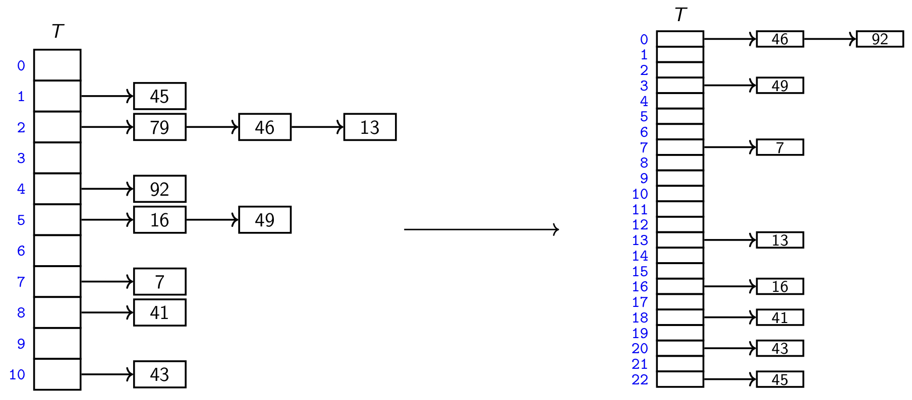

M7
motivation for hashing (ideal situation)
Assumption: small # keys ( for a known )
Dictionary Implementation
- search(k) → check wether A[k] is NIL →
- insert(k,v) → A[k] →
- Total space is
Cons:
- It cannot be used if the keys are not integers
- It wastes space if M is unknown or n << M
Hashing
dictionary implementation inspired by direct addressing but doesn’t depend on the keys being small
- Hash Function,
- map {keys} →
- An item with key should ideally be stored in
- eg:
- Hash Table,
- Stores the dictionary
- determines
Example

Collision: If we do insert(46), . There is already a value at
Since we are trying to fit arbitrarily many keys in finite slots, , collisions are bound to happen.
Collision Strategies

Chaining
has a dictionary in each slot
- Find the slot →
- Use regular dictionary operations
ie: unordered list
Recall: linked list → unordered → use Move2Front Heuristic
- Insert to front of list →
- Search for k in list → (1) search in unordered list, (2) MTF
- Delete from front of list → (1) delete in unordered list, (2) MTF
Example

Problem: operations are . So, lists need to be kept short.
Average Slot Size (load factor)
Keep the load factor in some range
- Double (adjust and )
- re-insert items
Cost
- However, being kept in a range, means re-hashing is done every operations
- When we re-hash, we double … so decreases by a factor of 2… We need to double to re-hash again… so we need more insert operations.
- So the amortized time is:
Example

If run-time is for every iterations, we can neglect it if adding to every iteration won’t change the run-time
Analysis
Cost of search & delete is:
What is the average list-length ?
Assumption #1: Uniform Hashing
Consequences:
Each hash-value is equally likely
→
→ Each key is expected to collide with other keys
Result:
→ Expected list-length is
→ Expected cost:
Assumption #2: Do re-hashing so that always
→ Re-hashing, amortized cost (so negligeable)
→ Expected cost:
Summary
Average run-time of operations is
→ = average length of a list
→ Assuming: (1) UHA, and (2) re-hashing →
→ re-hashing cost is amortized (can’t neglect it)
Open Addressing
Idea
1 key per slot, multiple potential slots
probe sequence, : possible locations for is a sequence, until spot is available
Linear Probing
Probe Sequence
- finds your initial spot
- if is occupied, try the next one, and the next one and so on…
- wrap around to the front if your at the end →
Example

Problem:
- Building up clusters of occupied values → makes searching longer
- Deletion: if it leaves an empty slot behind → next search could stop early
Solution:
Distinguish between NIL and deleted
- search: skip over deleted stop at NIL
- insert: look for deleted or NIL
Double Hashing
Probe Sequence
-
- tells you where to look
- Move forward by
- tells you how far to move forward
Requirements
- independent
- Using 2 modular hash functions leads to dependencies
-
- & are relative prime; no common divisors
Solution
Multiplication Method for
- , as random as possible
- We will use
Cuckoo Hashing
Idea:
- 2 independent and 2 tables
- Every key can be in either 1 or the other, not both.
- can only be at or
- search/delete
Insertion
idea
- put the key where it needs to be
- if another key was there, it has to find it’s new spot


Analysis
# Evictions needed until we find a place ≤
→ re-hash after evictions
If is small enough, expected evictions is
→ Need
→ wastes space
Summary
Restrictions on
Hashing w’ Chaining:
Open addressing: α ≤ 1
- otherwise all slots are taken
- For the analysis, we require 0 < α < 1
- away from 1 → expected depends on
Cuckoo hashing requires 0 < α < 1/2
Given: (1) these restrictions, (2) the universal hashing assumption:
- All open addressing strategies have expected time for search, insert, delete
- Cuckoo Hashing has worst-case time for insert, delete
- Probe sequences use worst-case space
- Cuckoo Hashing uses expected space
For any fixed hash-function the worst-case run-time is for insert
Cuckoo vs. Double Hashing vs. Chaining
- Chaining
- better for insert
- cuckoo if:
- more searches than insertions
- C.H is better for search, delete
- double hashing:
- if you care about space
How to choose ?
Problem
UHA is impossible (too many options for )
Solution
Choose simple s.t
- unrelated to any possible patterns in the data
- depends on the key
3 Methods
- Modular method:
- choose M to avoid any patterns (ie: prime)
- Multiplication method:
- irrational to avoid patterns w’ keys
- New Method: Carter Wegman
- choose randomly
- Requires: all keys are in for a big prime
- Choose arbitrarily, (power of 2 is good)
- Choose random
Result:
- is a random linear function
- uniform hashing assumption satisfied
- two keys collide with at most probability
- Recall: This is enough to prove the expected run-time bounds for chaining.
- choose randomly
Multi-dimensional Data
If the keys are multi-dimensional (ie: strings)
- Flatten,

R=255 is chosen hear (works well with ASCII)
- Modular

{kind=link}
{kind=link}